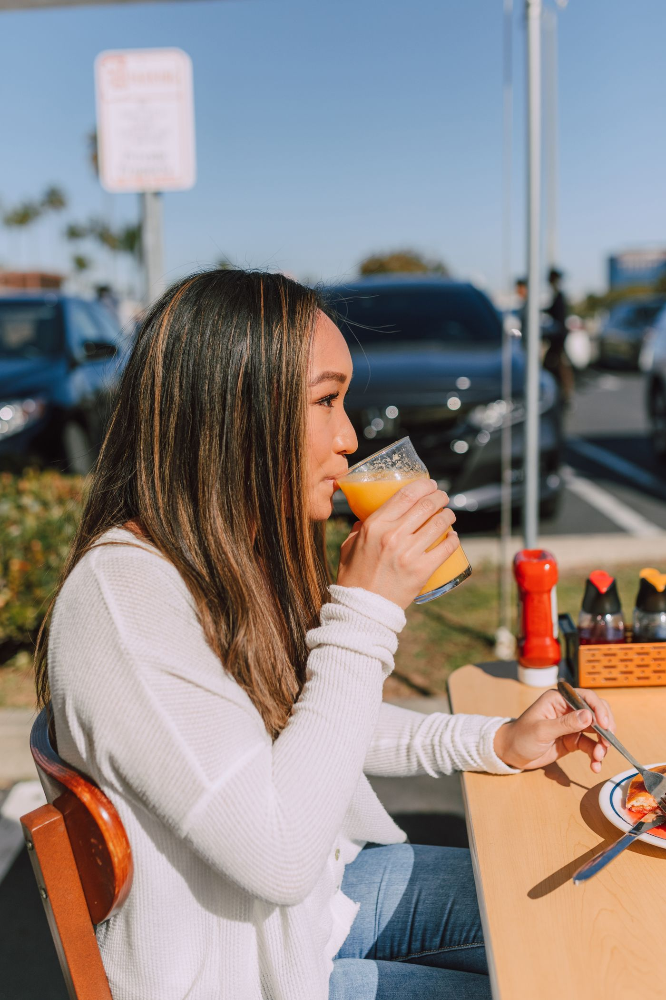
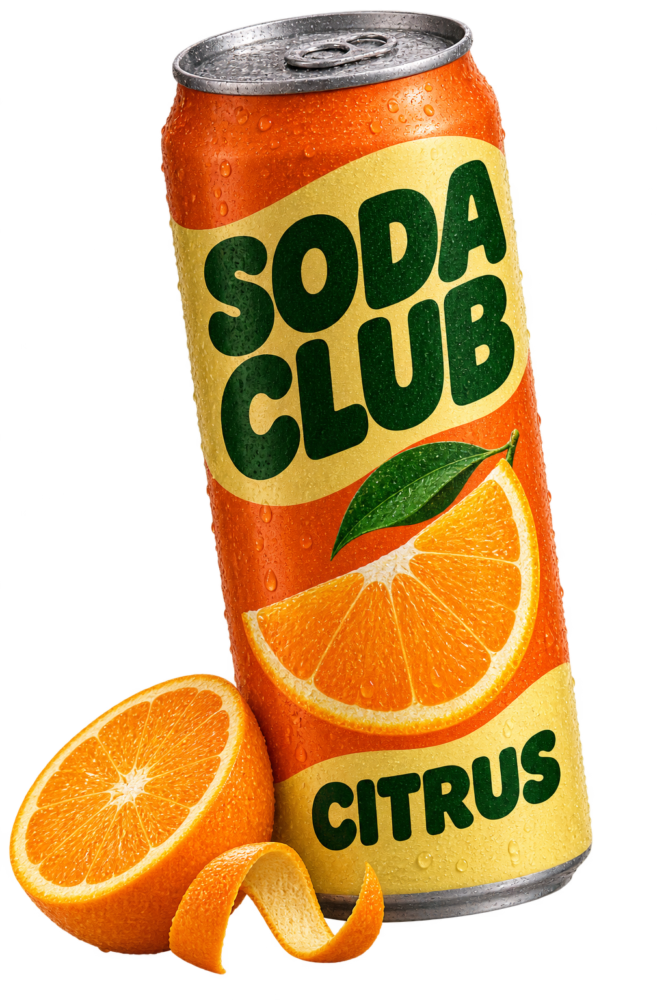

Schenk de
zon maar in.
Citrus op tafel. Iedereen erbij.
Ontdek de citrus-edit

Een glas vol zomer.
Een schaal citrus, een kan vol ijs en plek voor iedereen. De citrus-edit draait om die simpele middag die je graag nog wat langer laat duren.
Citrus voorop
Een frisse smaakrichting voor je volgende tafelmoment.
Goed gekoeld
Pak een glas, vul het met ijs en schenk rustig in.